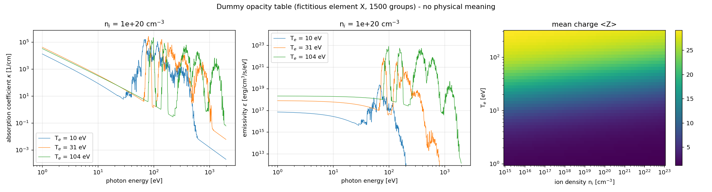
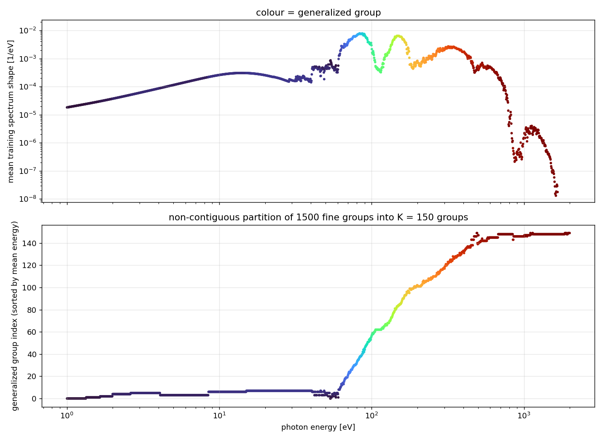
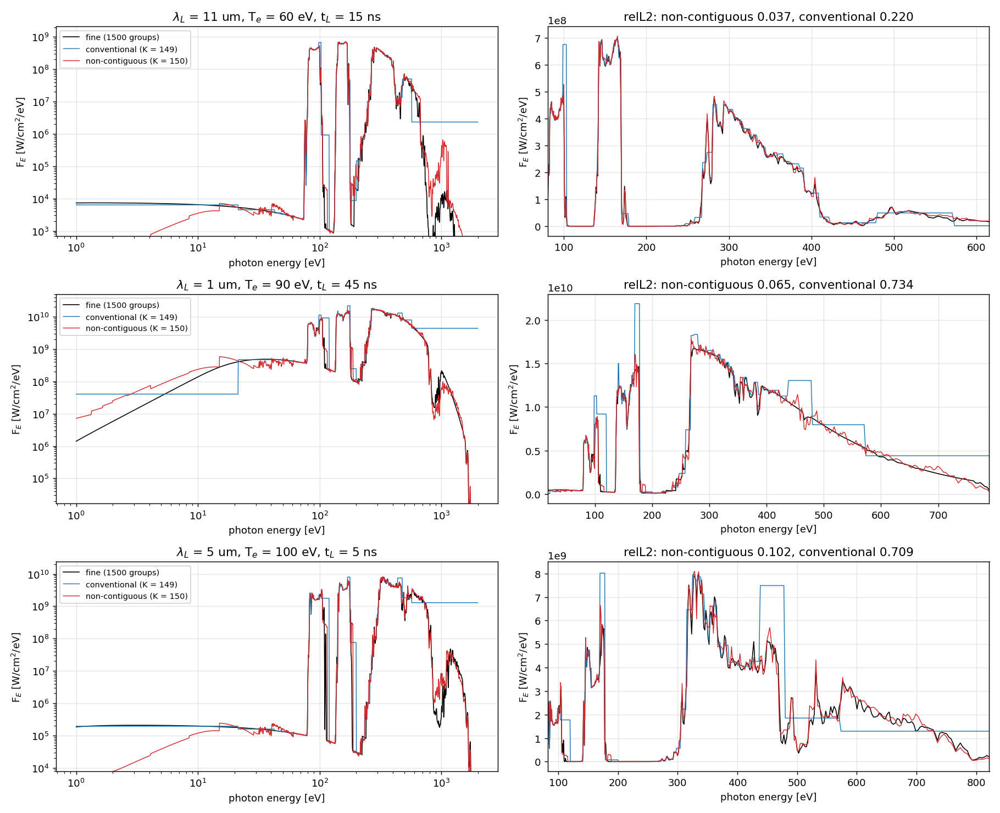
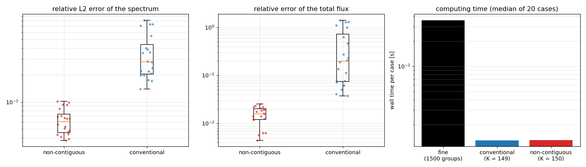

This package builds a K-group opacity table (default K = 150) from a 1500-group table by the non-contiguous generalized-group method, and tests it with one-dimensional multigroup diffusion in an isothermally expanding plasma.
The opacity table in this package is a dummy.
The tin opacity table used in the paper cannot be distributed.
step1_make_dummy_opacity.py generates a table for a fictitious element "X"
from random numbers. Its values have no physical meaning. The errors and speed-up
obtained with it are therefore different from the numbers in the paper.
numpy, scipy, matplotlibpip install -r requirements.txtAbout 1 GB of memory and 150 MB of disk space are needed. No GPU and no compiler are needed.
Run the three steps in this order, in the folder that contains the scripts.
python3 step1_make_dummy_opacity.py # ~2 s dummy 1500-group table
python3 step2_build_fewgroup_table.py # ~30 s training runs + 150-group table
python3 step3_test_fewgroup_table.py # ~20 s test on unseen cases + figuresThe times are for one core of a laptop-class CPU with the default settings.
| File | Role |
|---|---|
step1_make_dummy_opacity.py |
Makes the fictitious 1500-group opacity / emissivity table. |
step2_build_fewgroup_table.py |
Solves the training cases with 1500 groups, finds the generalized groups, and writes the K-group table. |
step3_test_fewgroup_table.py |
Compares the K-group table with the 1500-group calculation on cases that were not used for training. |
mg_diffusion.py |
Library and command-line tool: fine-group flux-limited diffusion solver, isothermal expansion profile, table interpolation. |
fewgroup.py |
Library: partition into generalized groups, projection of the table, and the K-group model (FewGroupModel). |
python3 step1_make_dummy_opacity.py [--seed 0] [--groups 1500] [--out dummy_opacity_1500g.npz]Output: dummy_opacity_1500g.npz (86 MB) and fig1_dummy_opacity.png.
| Key | Shape | Content |
|---|---|---|
E, dE, E_edges | (1500), (1500), (1501) | photon-energy mesh [eV], logarithmic, 1 eV to 2 keV |
Te | (44) | electron temperature grid [eV], 1 to 300 eV, uniform in log |
Ni | (81) | ion density grid [cm-3], 1015 to 1023, uniform in log |
Zbar | (44, 81) | mean charge |
opac | (44, 81, 1500) | absorption coefficient κ [1/cm] |
emis | (44, 81, 1500) | emissivity ε [erg/cm3/s/eV], integrated over 4π |
A, Z_nuc | scalar | mass number and atomic number of the fictitious element |
The dummy model imitates the structure of mid- and high-Z plasmas such as tin and gold.
Every charge state has five unresolved transition arrays (UTAs), each a dense bundle of random lines.
Two arrays stay in almost the same band for many charge states; three arrays move quickly with the charge state.
The arrays are defined in UTA_ARRAYS at the top of the script and can be edited.
The model also has a smooth continuum, a mean charge that depends on (Te, ni),
and an emissivity below the Planck limit at low density.

python3 step2_build_fewgroup_table.py [--K 150] [--table dummy_opacity_1500g.npz]
[--Te 10 100 5] [--lambda_L 1 11 2] [--t_L 5 50 5] [--train_frac 0.05] [--seed 0]What the script does:
MIN MAX STEP. The default grid has 19 × 6 × 10 = 1140 cases.Output:
| File | Content |
|---|---|
fewgroup_table_K150.npz | proposed non-contiguous 150-group table (15 MB) |
conventional_table_K150.npz | conventional 150-group table (contiguous bands, flat shape) for comparison |
fig2_generalized_groups.png | which fine group belongs to which generalized group |
Main keys of the K-group table:
| Key | Shape | Content |
|---|---|---|
label | (1500) | index k of the generalized group of each fine group |
modes | (K, 1500) | shape wk(g); zero outside the group; Σ wk2 ΔE = 1 |
lkab | (44, 81, K) | log10 of κ̄k = Σ wk2 κg ΔEg (absorption) [1/cm] |
leps | (44, 81, K) | log10 of ε̄k = Σ wk εg ΔEg (emission) |
lkD | (44, 81, K) | log10 of κD,k = 1 / Σ (wk2 ΔEg / κg) (diffusion) [1/cm] |
lTe, lNi, Zbar, A | log10 grids, mean charge and mass number (copied from the fine table) | |
train_cases, grid, n_i, seed | record of the training conditions |

python3 step3_test_fewgroup_table.py [--K 150] [--n_test 20] [--seed 1]
python3 step3_test_fewgroup_table.py --case 10.6 30 10 # one case: lambda_L [um], T_e [eV], t_L [ns]The script takes 20 random cases that were not used for training and compares three calculations of the spectrum of the outgoing flux: 1500 groups (reference), the non-contiguous K-group table, and the conventional K-group table.
| File | Content |
|---|---|
test_results.csv | errors and wall time of every test case |
fig3_spectra.png | spectra of the best, median and worst test case |
fig4_errors.png | error distributions and computing time |
Error measures: relL2 is the relative L2 error of the spectrum on the fine mesh;
total is the relative error of the spectrally integrated flux.
Example result with the default settings and the dummy table (20 test cases):
| relL2 median | relL2 90th pct. | total median | total 90th pct. | time / case | |
|---|---|---|---|---|---|
| non-contiguous, K = 150 | 6.1 % | 9.4 % | 1.6 % | 2.2 % | 0.03 s |
| conventional, K = 150 | 28 % | 73 % | 20 % | 129 % | 0.02 s |
| fine, 1500 groups | - | - | - | - | 1 - 2 s |
The time of the fine-group calculation includes the interpolation of the 1500-group table. The numbers depend on the computer, on the random seeds and on the dummy table.


import mg_diffusion as M
from fewgroup import FewGroupModel
# K-group calculation: needs only the K-group table
model = FewGroupModel('fewgroup_table_K150.npz')
out = model.run(lambda_L=10.6, n_i=4e22, T_e=30.0, t_L=10.0)
E = out['E_eV'] # fine photon-energy mesh [eV]
F_E = out['F_E'] # outgoing flux spectrum [erg/cm^2/s/eV], reconstructed on the fine mesh
F_k = out['F_k'] # outgoing flux amplitude of each generalized group
# fine-group reference
ref = M.run(10.6, 4e22, 30.0, 10.0, 'dummy_opacity_1500g.npz', verbose=False)
print(M.spectrum_errors(ref['F_E'], F_E, model.dE)) # (relL2, total)A single fine-group case can also be run from the command line:
python3 mg_diffusion.py --lambda_L 10.6 --T_e 30 --t_L 10 # writes spectrum_fine.txt / .pngPlasma. Isothermal expansion in a slab: ni(x) = nic exp(−x/L), L = cs tL, cs = (⟨Z⟩ Te / mi)1/2. The position x = 0 is the critical surface, ⟨Z⟩ nic = nc = 1.1 × 1021 / λL2 cm-3 (λL in µm). The domain is 0 ≤ x ≤ 500 µm with 1 µm cells.
Fine-group transport. For each group g: −d/dx[Dg dEg/dx] + c κg Eg = εg, Dg = c λ(R)/κg, R = |dEg/dx| / (κg Eg). The default flux limiter is Larsen's (n = 2). Both boundaries are Marshak vacuum boundaries. The equations are solved by the Thomas algorithm (vectorized over the groups) with Picard iteration.
Generalized groups. The spectral energy density is written as
ug(x) ≈ ak(x) wk(g) for g in the group Sk.
Because the groups Sk do not overlap, the projected equations are K independent diffusion equations
with the coefficients κ̄k, ε̄k and κD,k given in Step 2.
The same solver is used for the fine groups and for the generalized groups.
The groups and shapes are found from the Gram matrix of the training spectra by weighted kernel k-means
followed by a rank-one refinement (see fewgroup.py).
.npz file with the keys of Step 1
and give it with --table. The Te and ni grids must be uniform in log.
κ must be positive (values below 10-5 cm-1 are raised to this floor).--seed. The same seed gives the same table..npz tables are large and can be regenerated, so they are listed in .gitignore.